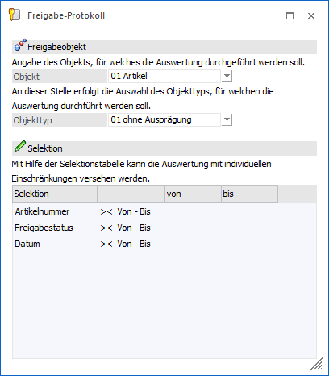
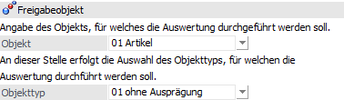
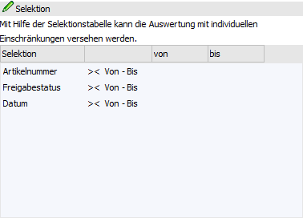
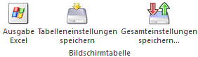
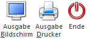

Im Programmpunkt
1 WinLine START
1 Freigabe
1 Freigabeprotokoll
kann eine Auswertung über den aktuellen und historischen Freigabestatus erzeugt werden.

Freigabeobjekt

Ø Objekt
An dieser Stelle wird hinterlegt, für welches Objekt eine Auswertung erzeugt werden soll. Zur Auswahl stehen folgende Datenbereiche:
ü 01 - Artikel
ü 02 - Personenkonten (ausgenommen Interessenten und Anfragelieferanten)
ü 03 - Offene Posten
ü 04 - Belege
ü 05 - Buchungsstapel
Ø Objekttyp
Abhängig vom verwendeten Objekt kann hier der entsprechende Objekttyp gewählt werden. Dabei stehen folgende Objekttypen zur Verfügung:
ü Artikel
ü 01 - ohne Ausprägung
ü 02 - mit Chargennummer
ü 03 - mit Identnummer
ü 04 - mit Ausprägungen
ü Personenkonten
ü 01 - Debitoren
ü 02 - Kreditoren
ü Offene Posten
ü 01 - Eingangsrechnungen
ü 02 - Ausgangsrechnungen
ü Belege
ü 01 - Angebot Verkauf
ü 02 - Auftragsbestätigung Verkauf
ü 03 - Lieferschein Verkauf
ü 04 - Faktura Verkauf
ü 05 - Anfrage Einkauf
ü 06 - Bestellung Einkauf
ü 07 - Lieferschein Einkauf
ü 08 - Faktura Einkauf
ü Buchungsstapel
ü 01 - Buchungsstapel
Hinweis
Hierbei handelt es sich im
Wesentlichen um alle Stapel mit den Nummern zwischen 1 und 99, wie z.B. manuell
erfasste Stapel, mit EXIM importierte Stapel, Stapel aus ASCII-Stapel-Buchen,
usw.
ü 02 - Zahlungsstapel (Stapel aus dem Zahlungsverkehr)
ü 03 - Eröffnungsstapel (aus dem Menüpunkt "Eröffnungsbuchungen")
ü 04 - FAKT-Stapel
ü 05 - LOHN-Stapel
ü 06 - Anlagenbuchhaltungs-Stapel
ü 07 - Zahlungsausgleichs-Stapel
ü 08 - Dialogbilanz-Stapel
Tabelle "Selektion"

In der Selektionstabelle können die Objekte weiter eingeschränkt werden.
Ø Selektion
In dieser Spalte werden die Selektionskriterien dargestellt, wobei die Kriterien vom Objekttyp abhängig sind.
Ø Operator
An dieser Stelle wird definiert, ob das Selektionskriterium zutreffen soll (==), nicht zutreffen soll (<>) oder ob ein bestimmter Selektionsbereich gewählt werden soll (><).
Ø Von / Bis
Wurde im Feld Operator ein Selektionsbereich gewählt, kann die Unter- und Obergrenze in den Feldern "von" "bis" eingegeben werden. Wurde als Operator "ist gleich" oder "ungleich" gewählt, kann nur das Feld "von" bearbeitet werden.
Tabellenbuttons

Ø Ausgabe Excel
Durch Anwahl des Buttons "Ausgabe Excel" wird der Inhalt der Tabelle nach Microsoft Excel übergeben.
Ø Tabelleneinstellungen speichern
Die Spalten einer Tabelle können grundsätzlich an beliebige Positionen verschoben, bzw. in der Breite entsprechend angepasst werden. Durch Anwahl des Buttons "Tabelleneinstellungen speichern" werden die Einstellungen benutzerspezifisch gespeichert und bei dem nächsten Aufruf des Programmpunktes wieder vorgeschlagen.
Ø Gesamteinstellungen speichern
Im Gegensatz zu "Tabelleneinstellungen speichern" können mit "Gesamteinstellungen speichern" mehrere Tabellenaufbauten gespeichert und nach Wunsch geladen werden. Zusätzlich werden Sonderfunktionen der Tabelle (z.B. "Spalte gruppieren") ebenfalls bei der Speicherung bedacht.
Buttons

Ø Ausgabe Bildschirm
Mit Hilfe des Buttons "Ausgabe Bildschirm" oder der Taste F5 wird die Auswertung am Bildschirm ausgegeben.
Ø Ausgabe Drucker
Durch Anwahl des Buttons "Ausgabe Drucker" wird die Auswertung am Drucker ausgegeben.
Ø Ende
Durch Anwahl des Buttons "Ende" bzw. der Taste ESC wird der Programmbereich geschlossen und die Auswertung nicht erzeugt.